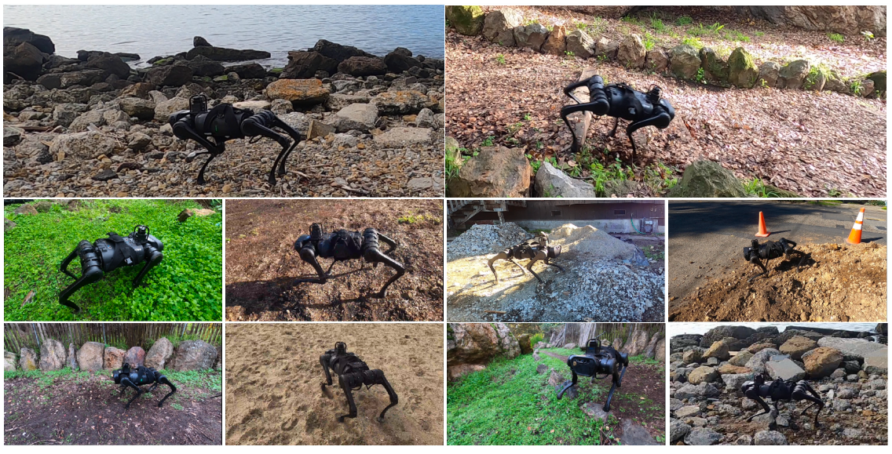
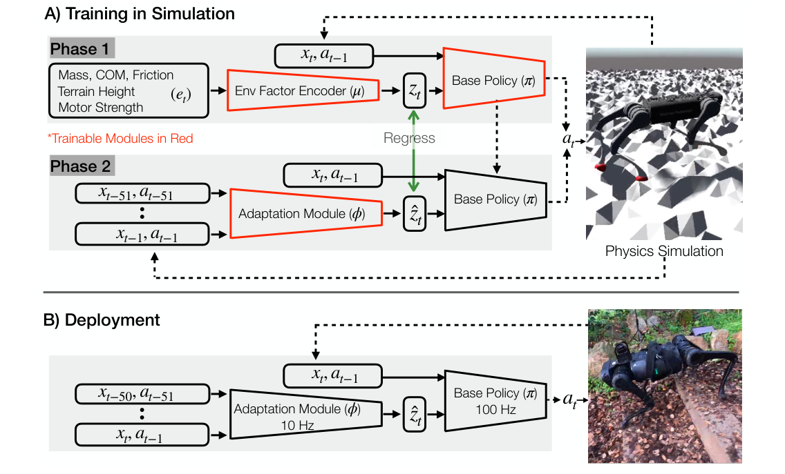
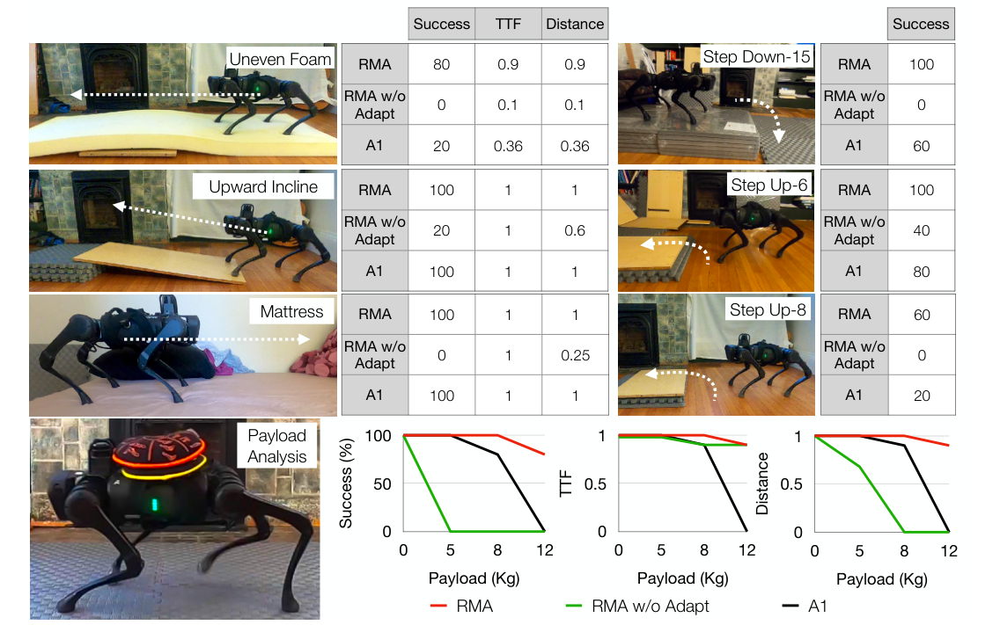
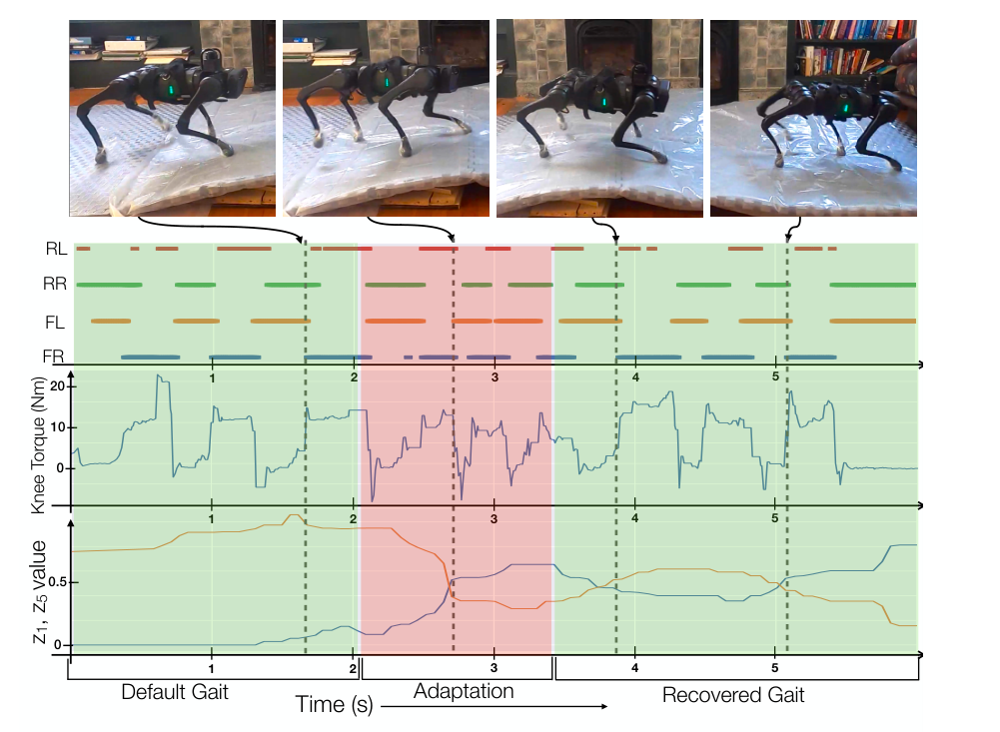

Background & Motivation
RMA(Rapid Motor Adaptation)讓四足機器人在不到一秒內適應沒見過的地形、負重與磨損。做法是兩個模組:base policy 在模擬中以特權環境參數(摩擦、質量、地形高度…)壓縮成的extrinsics 潛向量 \(z_t\) 為條件學會行走;adaptation module 再學會只從 0.5 秒的本體感覺歷史「推回」\(z_t\)。全程模擬訓練、零微調部署到便宜的 Unitree A1,在沙地、泥地、草叢、油面、樓梯上即時適應。
RMA (Rapid Motor Adaptation) lets a quadruped adapt to unseen terrain, payloads and wear in under a second. Two modules: a base policy learns to walk in simulation conditioned on an extrinsics latent \(z_t\) encoding privileged environment factors (friction, mass, terrain height…); an adaptation module then learns to infer \(z_t\) from just 0.5s of proprioceptive history. Trained fully in simulation, deployed zero-shot on the low-cost Unitree A1, adapting on the fly on sand, mud, grass, oil and stairs.

如果只有 30 秒In 30 seconds
- 問題 — 模擬訓練的行走策略到真實世界會撞上 sim-to-real gap;既有解法要嘛保守(domain randomization)、要嘛需要在真實世界收數分鐘資料來適應——沒學會走路前收資料,機器人會摔壞。
- Problem — Sim-trained walking policies hit the sim-to-real gap; existing fixes are either conservative (domain randomization) or need minutes of real-world data to adapt — collecting data before the robot can walk means falls and damage.
- 方法 — 兩階段:Phase 1 用特權資訊 \(e_t\) 的低維編碼 \(z_t\) 訓練 base policy(RL);Phase 2 用監督學習訓練 adaptation module,從 50 步狀態-動作歷史回歸 \(\hat z_t\)。部署時兩者非同步跑(10 Hz / 100 Hz)。
- Method — Two phases: Phase 1 trains the base policy by RL on a low-dim encoding \(z_t\) of privileged info \(e_t\); Phase 2 trains an adaptation module by supervised learning to regress \(\hat z_t\) from 50 steps of state-action history. At deployment the two run asynchronously (10 Hz / 100 Hz).
- 結果 — 模擬測試成功率 73.5%,幾乎追平拿真值 \(z_t\) 的 Expert(76.2%),大勝 domain randomization(62.4%)與顯式系統辨識(56.5%);真實世界揹到 12 kg(= 100% 自重)、油面 90% 成功。
- Results — 73.5% simulation success, nearly matching the Expert that sees true \(z_t\) (76.2%), far above domain randomization (62.4%) and explicit system ID (56.5%); in the real world it carries 12 kg (100% of body weight) and crosses an oily patch at 90% success.
領域脈絡Field context
四足行走四十年來的主流是模型式控制(MIT Cheetah 3 的 MPC、ANYmal 的最佳化控制器),但需要精確動力學模型、深厚專家知識與人工調步態。深度 RL 想取代這些人力,在模擬中已見成效,難的是搬到真實世界。
For forty years legged locomotion was dominated by model-based control (MPC on MIT Cheetah 3, optimized controllers on ANYmal), which demands accurate dynamics models, deep expertise and hand-tuned gaits. Deep RL aims to replace that labor and works in simulation — the hard part is the real world.
跨越 sim-to-real 的三條既有路線:(1) domain randomization——用參數雜訊換穩健,代價是策略過度保守;(2) 把模擬校準得更準(Tan et al. 擬合馬達模型、Hwangbo et al. 用神經網路 actuator model)——每台新機器都要重收資料;(3) 線上系統辨識/測試時適應(顯式估參數、潛向量最佳化、meta-learning)——部署後仍需多條真實 rollouts。RMA 屬於第三條路,但把「適應」壓進了一次前饋推論。
Three existing routes across sim-to-real: (1) domain randomization — robustness bought with parameter noise, at the cost of over-conservative policies; (2) calibrating the simulator (Tan et al. fit motor models; Hwangbo et al. learn a neural actuator model) — new data collection for every new robot; (3) online system ID / test-time adaptation (explicit parameter estimation, latent optimization, meta-learning) — still needs multiple real rollouts after deployment. RMA is on route 3, but compresses "adaptation" into a single feed-forward inference.
最可比的前作是 Lee et al. 2020(Science Robotics):同樣是「特權老師→學生」在崎嶇地形上的盲走,但依賴手工步態產生器(TG)與真實馬達資料校準。RMA 的宣言是:這些領域知識都不需要——生物能量學獎勵 + 崎嶇地形 + 潛向量回歸就夠。它與 Peng et al. 2020(模仿動物、真實世界微調)形成了「免示範、免微調」的正面對照。
The closest prior work is Lee et al. 2020 (Science Robotics): also privileged teacher→student blind walking on rough terrain, but relying on a hand-coded trajectory generator and real motor-data calibration. RMA declares none of that domain knowledge necessary — bioenergetics rewards + fractal terrain + latent regression suffice. Against Peng et al. 2020 (animal imitation + real-world fine-tuning) it stands as the "no demos, no fine-tuning" counterpoint.
核心洞見 · KEY INSIGHTSKEY INSIGHTS
這篇的價值不只是「A1 會走沙地」,而是底下幾個觀念,後來成了整個領域的標準配方:
The value is not "A1 walks on sand" but these ideas, which later became the standard recipe of the field:
- 估潛向量,不估物理參數。不去重建摩擦係數、質量這些難以辨識、且彼此共變的物理量,只回歸一個 8 維的 \(z_t\)——它只需編碼「行為該怎麼改」,對不對不重要,有用就好(端到端訓練保證這點)。
- Estimate the latent, not the physics. Skip reconstructing friction or mass — hard-to-identify, covarying quantities — and regress an 8-dim \(z_t\) that only encodes "how behavior should change." It need not be correct, only useful (end-to-end training guarantees that).
- 系統辨識可以「攤銷」成前饋網路。指令動作與實際動作的差,洩漏了環境資訊(類比 Kalman filter 從觀測史估狀態)。φ 學的就是「最佳化問題 → 解」的映射,所以適應只要 <1 秒,而 Peng et al. 需要 4–8 分鐘真實資料。
- System ID can be amortized into a feed-forward net. The gap between commanded and actual motion leaks environment information (analogous to a Kalman filter estimating state from observation history). φ learns the map "optimization problem → solution," so adaptation takes <1s, versus 4–8 minutes of real data for Peng et al.
- 兩個時間尺度、非同步執行。環境(extrinsics)變得慢、機器人狀態變得快——φ 跑 10 Hz、π 跑 100 Hz、無需對時。這個解耦讓策略能塞進 A1 的板載算力,是「便宜機器人也能學走路」的工程關鍵。
- Two timescales, asynchronous execution. Extrinsics change slowly, robot state changes fast — φ runs at 10 Hz, π at 100 Hz, no clock alignment. The decoupling fits within the on-board compute of the A1: the engineering key to "cheap robots can learn to walk."
- 自然約束取代人工先驗。不用參考軌跡、不用步態產生器、不加人工模擬雜訊:最小化做功與地面衝擊的生物能量學獎勵 + 崎嶇地形,就長出可轉移的自然步態。
- Natural constraints replace hand priors. No reference trajectories, no trajectory generator, no artificial sim noise: bioenergetics rewards minimizing work and ground impact + uneven terrain grow a transferable, natural gait.
- 配方的歷史地位。[導讀補充] 「特權老師 + 歷史回歸學生」自此成為四足 sim-to-real 的預設骨架:Walk These Ways、DreamWaQ、視覺 parkour 系列都是它的直系後代;本庫的 FACTR(力回饋遙操作)亦出自同一個 Pathak 實驗室。
- Historical position of the recipe. [guide note] "Privileged teacher + history-regressing student" became the default skeleton of quadruped sim-to-real: Walk These Ways, DreamWaQ and the vision-parkour line are its direct descendants; FACTR (force-feedback teleoperation) in this library comes from the same Pathak lab.
Problem Diagnosis
現況 vs 痛點Status quo vs pain points
真實部署需要的是即時(幾分之一秒)線上適應:換地面、揹重物、馬達老化,都要邊走邊調。sim-to-real gap 有三個來源:(a) 實體機器人與模擬模型不符;(b) 真實地形遠比模擬多樣;(c) 接觸力與可變形表面的物理,模擬器根本算不準。
Real deployment demands online adaptation within fractions of a second: new ground, added payload, aging motors — all corrected while walking. The sim-to-real gap has three sources: (a) the physical robot differs from its sim model; (b) real terrains vary far beyond sim; (c) simulators cannot accurately capture contact forces and deformable surfaces.
更殘酷的約束:若策略還不會走就丟到岩地收「適應資料」,機器人會頻繁摔倒受損——連收 3–5 分鐘的真實行走資料都不可行。所以連「適應能力」本身也必須在模擬中學會。
The crueler constraint: dropping a not-yet-walking policy onto rocks to collect "adaptation data" means frequent damaging falls — even 3–5 minutes of real walking data is impractical. So the ability to adapt must itself be learned in simulation.
Gap 表 — 誰缺什麼,RMA 怎麼補Gap table — who lacks what, and how RMA fills it
| 既有方法Existing approach | 限制Limitation | RMA 如何補上How RMA fills it |
|---|---|---|
| Domain Randomization Tobin 2017 · Peng 2018 |
對環境參數「不知情」,以最優性換穩健性,策略過度保守。Agnostic to env params, trades optimality for robustness; over-conservative. | 策略以推得的 \(z_t\) 為條件,依環境調整行為而非一套走天下。Policy is conditioned on the inferred \(z_t\) — behavior tracks the environment instead of one-size-fits-all. |
| 顯式系統辨識Explicit system ID Yu 2017 |
直接估 \(\hat e_t\)(摩擦、質量…):難、常辨識不出、且沒必要。Predicting \(\hat e_t\) (friction, mass…) directly is hard, often unidentifiable, and unnecessary. | 只回歸低維 extrinsics \(z_t\)——共變參數投影到同一點也無妨,行為對就好。Regress only the low-dim extrinsics \(z_t\) — covarying params may collapse together; only the action matters. |
| 測試時潛向量最佳化Test-time latent optimization Peng 2020 (AWR) · Yu 2019/2020 |
要在新環境收真實 rollouts(4–8 分鐘)再最佳化,期間可能摔壞。Needs real rollouts in each new environment (4–8 min) before optimizing — risking falls meanwhile. | 前饋推論 \(\hat z_t\):0.5 秒歷史進、潛向量出,<1 秒完成適應、零真實樣本。Feed-forward inference of \(\hat z_t\): 0.5s history in, latent out — <1s adaptation, zero real samples. |
| Meta-learning MAML · Song 2020 · Clavera 2019 |
學快速適應的初始化,但仍需多條真實 rollouts。Learns an initialization for fast adaptation but still needs multiple real rollouts. | 適應=推論而非更新;部署後不再學習。Adaptation = inference, not updates; no learning after deployment. |
| Lee et al. 2020 Science Robotics |
同為特權學習+盲走強者,但依賴手工步態產生器與真實馬達資料的 actuator model。Also privileged learning + strong blind walking, but relies on a hand-coded trajectory generator and a real-data actuator model. | 零領域知識:無參考軌跡、無 TG、無馬達校準,獎勵來自生物能量學。Zero domain knowledge: no reference trajectories, no TG, no motor calibration; rewards from bioenergetics. |
注意問題被作者「重新定義」了:不是「如何縮小 sim-to-real gap」,而是「如何在模擬裡把『跨越 gap 的能力』本身學起來」。一旦這樣設框,domain randomization(沒有適應)與真實世界微調(適應太慢太危險)就都成了天然的靶子。
Note how the authors reframe the problem: not "how to shrink the sim-to-real gap" but "how to learn, inside simulation, the very ability to cross it." Once framed this way, domain randomization (no adaptation) and real-world fine-tuning (too slow, too risky) both become natural targets.
Core Method
整體流程:兩階段訓練 + 非同步部署Pipeline: two-phase training + asynchronous deployment

關鍵想法 1:extrinsics——「該怎麼改行為」的壓縮訊號Key idea 1: extrinsics — a compressed "how to change behavior" signal
17 維環境向量 \(e_t\)(質量與其位置 3 維、12 個馬達強度、摩擦 1 維、腳下地形高 1 維)被壓成 8 維 \(z_t\)。白話類比:走上結冰路面時,你不需要知道冰的摩擦係數,你只需要「步子放小、重心壓低」——\(z_t\) 存的就是後者。這一設計同時繞開了可辨識性問題:兩組對行為影響相同的物理參數,投影到同一個 \(z\) 完全無害。
The 17-dim environment vector \(e_t\) (mass and its position: 3, motor strength: 12, friction: 1, terrain height underfoot: 1) is compressed to an 8-dim \(z_t\). Plain analogy: stepping onto ice you never need the friction coefficient — you need "shorter steps, lower center of mass" — and \(z_t\) stores the latter. The design also sidesteps identifiability: two parameter settings with identical behavioral effect may safely collapse to the same \(z\).
為何能從歷史推回 \(z\)?因為「命令的動作」與「實際發生的動作」之間的落差,正是環境在資料裡留下的指紋——踩到低摩擦面,腳會滑;揹了重物,同樣扭矩下沉得更深。φ 是這個反問題的攤銷解(amortized solver)。
Why can history reveal \(z\)? Because the mismatch between commanded and actual motion is the fingerprint the environment leaves in the data — feet slip on low friction; the body sinks deeper under payload at the same torque. φ is the amortized solver of this inverse problem.
關鍵想法 2:on-policy 資料收集(DAgger 式)Key idea 2: on-policy data collection (DAgger-style)
若只用「π 掛真值 \(z_t\)」的完美軌跡訓練 φ,φ 只見過順風局;部署時一旦偏離,就進入沒學過的狀態分佈。解法(同 Ross et al. 2011):讓 π 掛著 φ 自己(初始隨機)預測的 \(\hat z_t\) 去跑,再用真值 \(z_t\) 當標籤,迭代至收斂。隨機初始化與不完美預測製造了足夠的「探索軌跡」,讓 φ 對部署時的偏移穩健。
Training φ only on perfect trajectories (π driven by true \(z_t\)) shows it only easy states; any deployment deviation lands in an unseen distribution. The fix (as in Ross et al. 2011): roll out π using the \(\hat z_t\) predicted by the current (initially random) φ, labeled with the true \(z_t\), iterating to convergence. Random initialization and imperfect predictions supply the exploratory trajectories that make φ robust to deployment drift.
獎勵與課程:不用示範,也不用人工雜訊Rewards & curriculum: no demos, no artificial noise
獎勵鼓勵以最高 0.35 m/s 前進,並懲罰急動與浪費:Forward \(\min(v_x,0.35)\)、側移與自轉、做功 \(-|\tau^\top(q_t-q_{t-1})|\) 與地面衝擊 \(-\|f_t-f_{t-1}\|^2\)(生物能量學核心項)、扭矩平滑、動作幅度、關節速度、姿態(roll/pitch)、垂直加速度、足底打滑。缺一不可的細節:直接全額懲罰會讓機器人學會「站著不動」,所以懲罰係數從 0.03 起以 \(k_{t+1}=k_t^{0.997}\) 的課程漸增;質量、摩擦、馬達強度的擾動範圍也隨訓練線性加大;地形難度則固定、隨機取樣。
Rewards encourage forward motion capped at 0.35 m/s and penalize jerk and waste: Forward \(\min(v_x,0.35)\); lateral/rotation; work \(-|\tau^\top(q_t-q_{t-1})|\) and ground impact \(-\|f_t-f_{t-1}\|^2\) (the bioenergetics core); torque smoothness; action magnitude; joint speed; orientation (roll/pitch); vertical acceleration; foot slip. A make-or-break detail: full penalties from the start teach the robot to stand still, so penalty coefficients grow from 0.03 on the curriculum \(k_{t+1}=k_t^{0.997}\); mass/friction/motor-strength perturbation ranges grow linearly; terrain difficulty stays fixed and randomly sampled.
訓練成本親民:Phase 1 用 PPO 跑 15,000 迭代(batch 80k)≈ 單 GPU 桌機 24 小時、1.2B 模擬步;Phase 2 監督學習 1,000 迭代 ≈ 3 小時、80M 步。RaiSim 模擬器 + fractal 地形(octaves 2、z-scale 0.27)。
Training is modest: Phase 1 PPO for 15,000 iterations (batch 80k) ≈ 24h on a single-GPU desktop, 1.2B sim steps; Phase 2 supervised for 1,000 iterations ≈ 3h, 80M steps. RaiSim simulator + fractal terrain (octaves 2, z-scale 0.27).
符號白話對照Symbols in plain words
| \(x_t\in\mathbb{R}^{30}\) | 機器人狀態:12 關節角 + 12 關節角速度 + roll、pitch + 4 個足底接觸開關。沒有相機、沒有 lidar——純本體感覺。Robot state: 12 joint angles + 12 joint velocities + roll, pitch + 4 binary foot contacts. No camera, no lidar — proprioception only. |
| \(a_t\in\mathbb{R}^{12}\) | 動作 = 12 個期望關節角,由 PD 控制器 \(\tau=K_p(\hat q-q)+K_d(\hat{\dot q}-\dot q)\) 轉成扭矩(\(\hat{\dot q}=0\))。Action = 12 desired joint angles, converted to torque by the PD law \(\tau=K_p(\hat q-q)+K_d(\hat{\dot q}-\dot q)\) with \(\hat{\dot q}=0\). |
| \(e_t\in\mathbb{R}^{17}\) | 特權環境向量:質量+COM(3)、馬達強度(12)、摩擦(1)、足下地形高(1)。只在模擬看得到。Privileged env vector: mass+COM (3), motor strengths (12), friction (1), terrain height underfoot (1). Visible only in sim. |
| \(z_t\in\mathbb{R}^{8}\) | extrinsics 潛向量 \(z_t=\mu(e_t)\):環境的「行為修正碼」。Extrinsics latent \(z_t=\mu(e_t)\): the behavior-correction code of the environment. |
| \(\mu,\ \pi\) | 環境因子編碼器(3 層 MLP,256-128)與 base policy(3 層 MLP,hidden 128),Phase 1 以 PPO 聯訓。Env-factor encoder (3-layer MLP, 256-128) and base policy (3-layer MLP, hidden 128), jointly trained by PPO in Phase 1. |
| \(\phi\) | adaptation module:先用 2 層 MLP 把每步 (x,a) 嵌入 32 維,再以 3 層 1-D CNN 沿時間卷積抓時序相關,攤平線性投影出 \(\hat z_t\)。Adaptation module: a 2-layer MLP embeds each (x,a) step into 32 dims, then a 3-layer 1-D CNN convolves across time for temporal correlations; flattened output linearly projects to \(\hat z_t\). |
| \(k=50\) | 歷史窗長:50 步 × 10 ms = 0.5 秒的「近期手感」。History window: 50 steps × 10 ms = 0.5s of recent "feel." |
Experimental Evidence
模擬主表(Table II,測試分佈,3 seeds × 1000 episodes)Main simulation table (Table II, test distribution, 3 seeds × 1000 episodes)
| 方法Method | Success % | TTF | Reward | 距離 (m)Dist. (m) | 真實樣本Real samples | Torque ↓ | Smooth. ↓ |
|---|---|---|---|---|---|---|---|
| Robust (DR) | 62.4 | 0.80 | 4.62 | 1.13 | 0 | 527.6 | 122.5 |
| SysID (Yu 2017) | 56.5 | 0.74 | 4.82 | 1.17 | 0 | 565.9 | 149.8 |
| AWR (Peng 2020) | 41.7 | 0.65 | 4.17 | 0.95 | 40k | 599.7 | 162.6 |
| RMA w/o Adapt | 52.1 | 0.75 | 4.72 | 1.15 | 0 | 524.2 | 106.3 |
| RMA | 73.5 | 0.85 | 5.22 | 1.34 | 0 | 500.0 | 92.9 |
| Expert (拿真值 \(z_t\),上界)(true \(z_t\), upper bound) | 76.2 | 0.86 | 5.23 | 1.35 | 0 | 485.1 | 85.6 |
三個讀點:(1) RMA 與 Expert 只差 2.7 個百分點——φ 幾乎完整回收了特權資訊的價值;(2) 環境在 episode 內持續重抽,需要離線最佳化的 AWR 完全跟不上(41.7%);(3) RMA 同時用更低的扭矩與更平滑的動作贏——不是靠蠻力。
Three readings: (1) RMA trails the Expert by only 2.7 points — φ recovers nearly all the value of privileged info; (2) with parameters resampled within episodes, offline-optimizing AWR cannot keep up (41.7%); (3) RMA wins while using lower torque and smoother actions — not brute force.
真實世界(室內,成功率 %,5 trials)Real world (indoor, success %, 5 trials)
| 任務Task | RMA | w/o Adapt | A1 (MPC) |
|---|---|---|---|
| 不平整泡棉Uneven foam | 80 | 0 | 20 |
| 記憶床墊Memory-foam mattress | 100 | 0 | 100 |
| 上坡 6°Incline 6° | 100 | 20 | 100 |
| StepDown-15cm | 100 | 0 | 60 |
| StepUp-6cm / 8cm | 100 / 60 | 40 / 0 | 80 / 20 |
| 油面(腳裹塑膠)Oily patch (plastic-wrapped feet) | 90 | — | — |
| 極限負重Max payload | 12 kg(=自重)仍高成功、不塌腰12 kg (= body weight), high success, no sag | >8 kg 不動但少摔>8 kg: stalls, rarely falls | 8 kg 起塌腰、後倒sags from 8 kg, then falls |

野外(Fig.1)與適應過程的「顯微鏡」(Fig.4)In the wild (Fig.1) and a microscope on adaptation (Fig.4)
戶外:沙、泥、健行步道、高草、土堆全trial 零失敗;步道樓梯下行 70%、水泥堆與卵石堆 80%(該堆還橫在側傾的坡上)——而訓練中從未出現下陷地面、纏腳植被或樓梯。
Outdoors: sand, mud, hiking trails, tall grass, dirt piles — zero failures across all trials; 70% descending trail stairs, 80% across cement/pebble piles (sitting on a sideways slope) — while training never contained sinking ground, entangling vegetation or stairs.

補充案例:半途丟 5 kg 沙包上背(補充材料 Fig.S3),\(z_2,z_7\) 跳變、扭矩上修、步態週期復原——同一套機制對「負重突變」同樣成立。
Companion case: a 5 kg sandbag dropped mid-run (suppl. Fig.S3) — \(z_2,z_7\) jump, torque re-levels higher, gait period recovers. The same mechanism handles abrupt payload change.
消融解讀Reading the ablations
| 拿掉什麼What is removed | 代價Cost | 證明了什麼What it proves |
|---|---|---|
| adaptation module(→ RMA w/o Adapt)Adaptation module (→ RMA w/o Adapt) | Success 73.5→52.1;真實世界泡棉 80→0、床墊 100→0Success 73.5→52.1; real-world foam 80→0, mattress 100→0 | φ 是承重牆:沒有它,base policy 只會保守站立。φ is load-bearing: without it the base policy just stands conservatively. |
| 潛向量 → 顯式參數(SysID)Latent → explicit params (SysID) | 73.5 → 56.5 | 估 \(\hat e_t\) 難且沒必要;低維 z 才是對的回歸目標。Estimating \(\hat e_t\) is hard and unnecessary; the low-dim z is the right regression target. |
| 條件式 → 環境無關(Robust/DR)Conditioned → agnostic (Robust/DR) | 73.5 → 62.4 | 「知道環境再行動」勝過「一套動作走天下」。"Know the environment, then act" beats one-behavior-fits-all. |
| 前饋推論 → 離線最佳化(AWR)Feed-forward → offline optimization (AWR) | 73.5 → 41.7(還多花 40k 真實樣本)73.5 → 41.7 (plus 40k real samples) | 環境一直變時,慢適應比不適應更糟。When environments keep shifting, slow adaptation is worse than none. |
實驗證明了:純模擬訓練的秒級本體感覺適應,能零微調搬上便宜真機並泛化到訓練沒見過的地形。沒有證明:高速運動(封頂 0.35 m/s)、需要視覺的地形(作者自承大落差與多腳纏繞會失敗)、與 Lee et al. 在同一平台上的直接對決。
What the experiments prove: sim-only, second-scale proprioceptive adaptation transfers zero-shot to a cheap real robot and generalizes to unseen terrain. What they do not prove: high-speed motion (capped at 0.35 m/s), vision-demanding terrain (the authors admit large drops and multi-leg obstructions cause failures), or a head-to-head with Lee et al. on the same platform.
Critical Reading
可被質疑的點Contestable points
- 「state-of-the-art」缺少真正的對手到場。真實世界只比了 A1 廠控與自家消融;最強的學習式前作 Lee et al. 2020 從未同台(不同機器人、不同先驗),Peng et al. 也只以 AWR 的形式在模擬中出現。跨平台的 SOTA 宣稱本質上無法驗證。
- "State-of-the-art" without the real rivals present. Real-world comparisons cover only the stock A1 controller and a self-ablation; the strongest learned prior, Lee et al. 2020, never shares a stage (different robot, different priors), and Peng et al. appears only as AWR in simulation. A cross-platform SOTA claim is inherently unverifiable.
- 模擬的「測試分佈」其實不算很 out-of-distribution。表 I 的測試範圍只比訓練略寬(摩擦 4.5→6.0、負重 6→7 kg);真正的分佈外證據都是質性的真實實驗。73.5% 這個主數字衡量的更像「內插+微外推」能力。
- The sim "test distribution" is barely out-of-distribution. Table I test ranges only slightly exceed training (friction 4.5→6.0, payload 6→7 kg); the genuinely OOD evidence is the qualitative real-world runs. The headline 73.5% mostly measures interpolation plus mild extrapolation.
- 對 \(z\) 的理解停留在兩個 case study。8 維怎麼選、各維編碼什麼、17→8 丟了什麼,論文只展示油面(\(z_1,z_5\))與負重(\(z_2,z_7\))兩例的分量變化;連作者自己都說支撐它的理由是「speculations」。歷史窗 k=50、z 維度 8、10 Hz 更新率皆無消融。
- Understanding of \(z\) rests on two case studies. Why 8 dims, what each encodes, what 17→8 discards — the paper shows only component shifts for oil (\(z_1,z_5\)) and payload (\(z_2,z_7\)); the authors themselves call their justifications "speculations." No ablations on the k=50 window, the 8-dim latent, or the 10 Hz update rate.
- 適應速度的宣稱要看細節。標題說 rapid、正文說「幾分之一秒」,但 Fig.4 顯示從踩進油面到步態恢復約需 1–1.5 秒(腳注則說 <1s)。在 0.35 m/s 下這夠快;若換成奔跑速度,同樣的延遲可能就是一次摔倒。
- The speed-of-adaptation claim needs fine print. The title says rapid, the text "fractions of a second," yet Fig.4 shows roughly 1–1.5s from entering the oil to gait recovery (a footnote says <1s). Ample at 0.35 m/s; at running speed the same latency could mean a fall.
- 盲走的天花板。作者坦承:下樓梯的突然墜落、亂石中多腳同時被絆,仍會導致失敗;要真正可靠必須加上視覺。本體感覺只能「事後」感知地形——它永遠比看得到的系統晚半步。
- The ceiling of blind walking. The authors concede: sudden drops on stairs or several legs obstructed at once in rubble still cause failures; true reliability needs vision. Proprioception senses terrain only after contact — always half a step behind a seeing system.
- 小瑕疵。[導讀補充] Fig.3 圖說寫「StepDown-15 成功 80%、不平整泡棉 100%」,但圖中表格是 StepDown 100%、泡棉 80%——兩數對調,正文引用時請以表格為準。
- A small blemish. [guide note] The Fig.3 caption states "StepDown-15 at 80%, uneven foam at 100%," while the embedded table shows StepDown 100% and foam 80% — the two numbers are swapped; trust the table when citing.
給讀書會 / 審稿的犀利問題Sharp questions for a reading group / review
- z 的內容:對 \(\hat z\) 做線性探測,能否解碼出摩擦與負重?若能,z 是否只是「摩擦+質量」的軟編碼?若不能,end-to-end 到底學了什麼?
- What lives in z: linear-probe \(\hat z\) — can friction and payload be decoded? If yes, is z just a soft code for "friction + mass"? If no, what did end-to-end training actually learn?
- 突變 vs 窗長:0.5s 窗口對「慢變化」是濾波優勢,對「瞬間踩空」則是延遲。把 k 減半或加倍,適應延遲與估計穩定度如何交換?為何論文不給這條曲線?
- Abrupt change vs window length: the 0.5s window filters slow drift but delays response to a sudden void. Halve or double k — how do latency and estimate stability trade off? Why is this curve absent?
- 公平對決:把 Lee et al. 的 TG+actuator-model 配方移植到 A1、或把 RMA 移到 ANYmal,同一 terrain suite 下誰贏?「零領域知識」值多少個百分點?
- A fair duel: port the TG + actuator-model recipe of Lee et al. onto the A1, or RMA onto ANYmal — same terrain suite, who wins? How many points is "zero domain knowledge" actually worth?
- 統計效力:室內 n=5、戶外未報 n;若每格跑 30 trials,80 vs 60 的差距還在嗎?哪些結論會退化成「不分勝負」?
- Statistical power: n=5 indoors, unreported n outdoors. At 30 trials per cell, does 80 vs 60 survive? Which conclusions decay into ties?
- 失敗模式:油面 10% 的失敗長什麼樣?\(\hat z\) 是「估錯」還是「估對了但 base policy 無解」?這決定改進方向是 φ 還是 π。
- Failure anatomy: what do the 10% oil failures look like? Was \(\hat z\) wrong, or right-but-unsolvable for the base policy? The answer decides whether to fix φ or π.
- 低速前提:0.35 m/s 的速度上限是獎勵設的。若目標速度 ×3,生物能量學獎勵還能長出穩定步態嗎?非同步 10 Hz 的 \(\hat z\) 還來得及嗎?
- The low-speed premise: the 0.35 m/s cap is set by the reward. At 3× target speed, do bioenergetics rewards still grow a stable gait? Is a 10 Hz \(\hat z\) still fast enough?
Takeaways
對你研究的啟發Implications for your research
- 「特權訓練 → 歷史回歸」是可搬走的通用模板:任何「模擬裡看得到、現場看不到」的變量(物體質量、接觸狀態、對手意圖…),都可以先讓策略以它為條件學會最優行為,再訓練一個小網路從可觀測歷史回歸它的低維編碼。
- "Privileged training → history regression" is a portable template: for any variable visible in sim but not in the field (object mass, contact state, opponent intent…), first condition the policy on it, then train a small net to regress its low-dim code from observable history.
- 回歸目標選潛向量,不選物理真值:低維、行為相關、允許共變參數塌縮——這是 SysID 56.5% vs RMA 73.5% 的十七個百分點所在。
- Regress the latent, not the physical ground truth: low-dimensional, behavior-relevant, tolerant of covarying-parameter collapse — worth the seventeen points between SysID (56.5%) and RMA (73.5%).
- 部署約束要進入架構設計:10/100 Hz 非同步解耦不是實驗細節,而是「慢變量-快變量」分工的架構表達;沒有它,整套方法上不了低成本硬體。
- Deployment constraints belong in the architecture: the 10/100 Hz async decoupling is not an implementation detail but the architectural expression of slow-variable / fast-variable division — without it the method never fits cheap hardware.
- 學生要在自己的錯誤分佈上訓練(on-policy/DAgger 式):任何「模組 A 餵模組 B」的系統,B 的訓練資料都應由 A 的不完美輸出生成。
- Train the student on its own error distribution (on-policy / DAgger-style): in any "module A feeds module B" system, the training data of B should be generated under the imperfect outputs of A.
值得引用的點What is worth citing
| 當你要主張…When you claim… | 就引這篇Cite this for |
|---|---|
| 「不需真實世界微調即可即時適應」"Real-time adaptation without real-world fine-tuning" | RMA 是標準出處:<1 秒 vs Peng et al. 的 4–8 分鐘。RMA is the canonical source: <1s vs 4–8 minutes in Peng et al. |
| 「估潛向量優於顯式系統辨識」"Latent estimation beats explicit system ID" | 引表 II:SysID 56.5 vs RMA 73.5,及可辨識性論證。Cite Table II (SysID 56.5 vs RMA 73.5) and the identifiability argument. |
| 「免示範、免步態產生器的四足學習」"Quadruped learning without demos or trajectory generators" | 引生物能量學獎勵 + fractal 地形的自然約束訓練。Cite the natural-constraint training: bioenergetics rewards + fractal terrain. |
| 「teacher-student 配方的源頭之一」"An origin of the teacher-student recipe" | 與 Lee et al. 2020 並引:Lee 供特權蒸餾脈絡,RMA 供潛向量回歸與零領域知識版本。Pair with Lee et al. 2020: Lee for the privileged-distillation lineage, RMA for the latent-regression, zero-domain-knowledge variant. |
RMA 把「系統辨識」攤銷成一個從 0.5 秒本體感覺歷史回歸環境潛向量的前饋網路,讓純模擬訓練的四足策略在真實世界的每一步即時適應——無需微調、無需視覺、無需人工步態先驗;它以最小的配方確立了此後四足 sim-to-real 的標準骨架。
RMA amortizes system identification into a feed-forward net that regresses an environment latent from 0.5s of proprioceptive history, letting a sim-trained quadruped policy adapt at every real-world step — no fine-tuning, no vision, no hand-crafted gait priors; with a minimal recipe it fixed the standard skeleton of quadruped sim-to-real ever since.